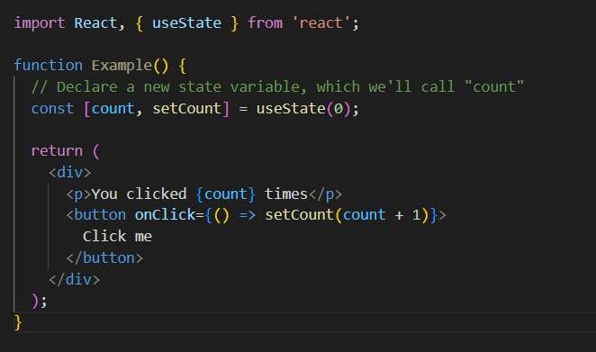
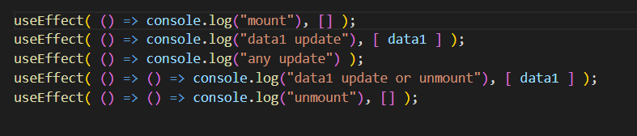
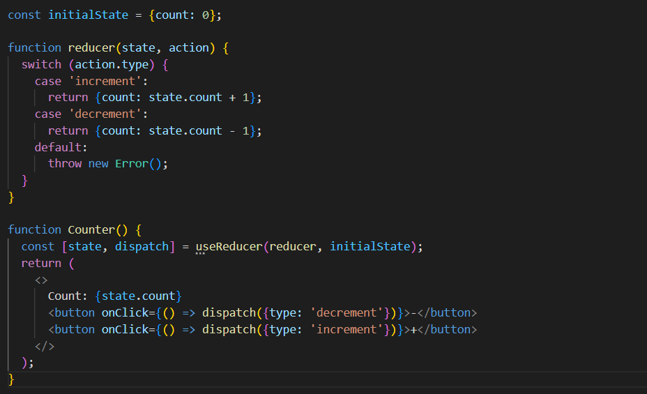

1. Difference between Axios and fetch
Axios is a Javascript library used to make HTTP requests from node.js or XMLHttpRequests from the browser and it supports the Promise API that is native to JS ES6. It can be used intercept HTTP requests and responses and enables client-side protection against XSRF. It also has the ability to cancel requests. The Fetch API provides a fetch() method defined on the window object. It also provides a JavaScript interface for accessing and manipulating parts of the HTTP pipeline . Axios uses data property while fetch uses body property. Axios automaticaaly converts data while fetch method needs data to be stringified. Axios is compatable in almost all the browsers and fetch is compatable only in specific browsers like chrome42+, Firefox 39+ etc.
2. What is UseState Hook ?(Implementation)
useState hook is used to manage state of the functional components.

In above example, we are impoerting useState hook and then invoking it. useState hook returns two variables which are, a variable to catch state and a varible to manipulate state.
3. What is useEffect Hook ?(Implementation)
useEffect allows functional component to mimic some of lifecycle methods liks shouldcomponentupadate
componenetdidmount, componeentwillunmount.
It contains two arguments. First one is a function which is mandetory and second one is an array
of dependencies which is optional.

As you can see in the above example, if you give an empty array, function will run only once when it mounts. If you haven't given any second argument, then it runs every time when component renders. if you give any dependencies in the array, it runs when ever the dependencies change. It runs the function in return when it unmount.
4. What is UseReducer Hook ?(Implementation)
useReducer hook functions similar to useState hook. It returns current state and a dispach method. it is used when one needs to add a new action to the reducer.

In above example, we are initializing a reducer and then dispaching actions by using dispach function returned by useReducer hook.
5. How do you pass data from parent to child
We can pass data from parent to child through props. If we want to pass data to child of child we can do it with adding props as attribute to child of child. this is called props drilling.